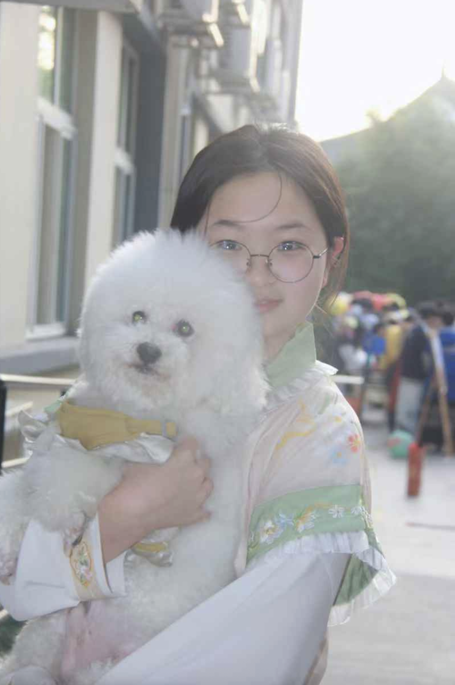

从班级中后游到托福103分，用一年半时间不断突破自己。主动答疑、系统复习、持续精进，这段经历让我学会在挫折中反思，在坚持中前行。
学生会副主席、Speech Club社长、班长。策划组织Horror Party、厨神大赛、迎新晚会等校园活动，通过组织与沟通锻炼能力，深刻理解责任与协作。
创建并独立运营微信公众号，通过采访不同人群分享他们的故事。单篇点击量突破5000次，致力于用真实故事激励和帮助更多的人。
擅长深度阅读和批判性思考，能够从文学、心理学、哲学等多领域书籍中汲取智慧。《此刻是春天》让我理解平凡生活的意义，《莉莉亚娜不可战胜的夏天》教会我直面内心，每本书都是一次灵魂的对话。
查看书单huhailu.razx@outlook.com
huuu80223
15967460515